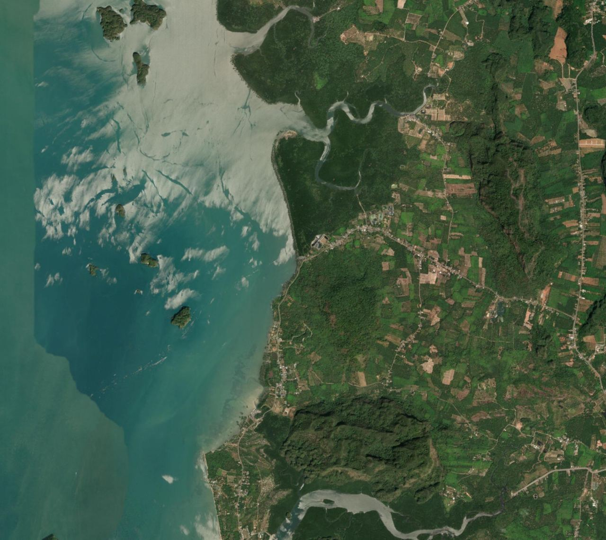
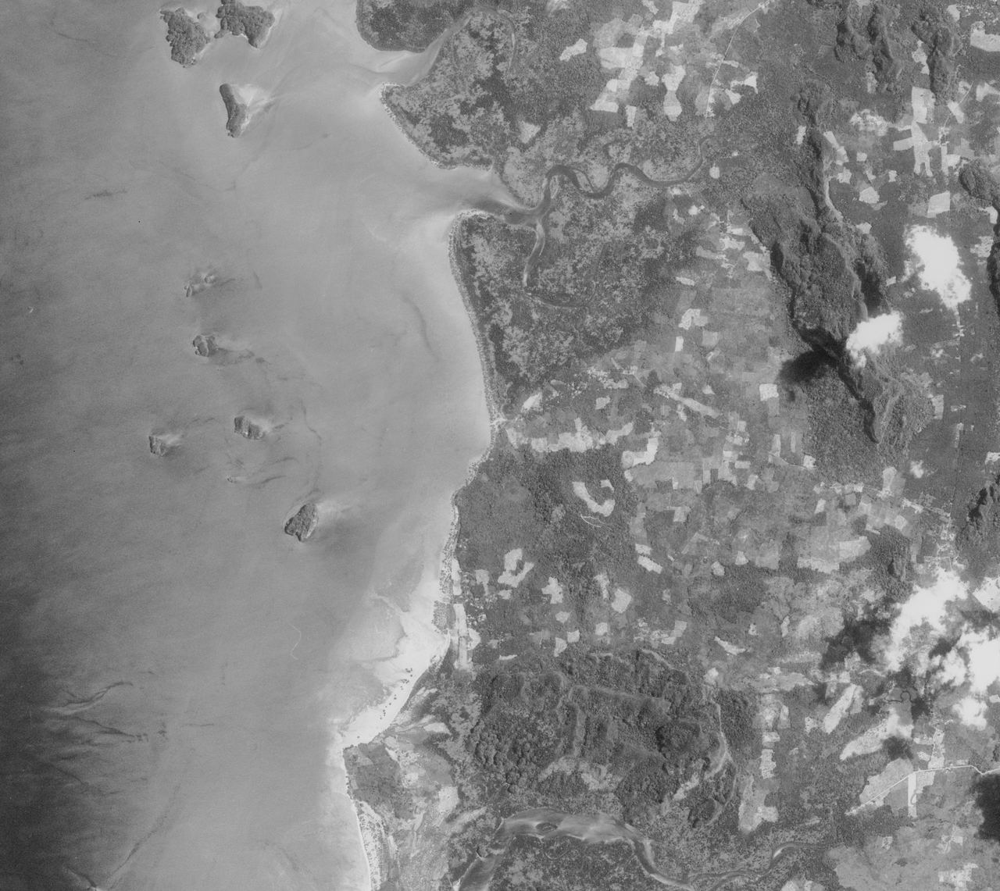

Krabi coast · modern / 1967


Selected: 471258 other DOL plot traces
Approximate screen traces · Historical alignment approximate · Not surveyed boundaries
DOL traces: September 2026; blue outline retained from November 2026. No fresh title lookup.
USGS: 2 April 1967 · Modern: Esri mosaic, capture dates unverified
Esri, Vantor, Earthstar Geographics and GIS User Community
Open or download the images
Blue: selected deed 47125. Red: saved DOL traces for 40802, 45591, 45592, 45594, 47124, 47128, 57183 and 75203. All outlines are approximate screen traces, not surveyed boundaries. Historical alignment is approximate; small offsets are not necessarily landscape changes.